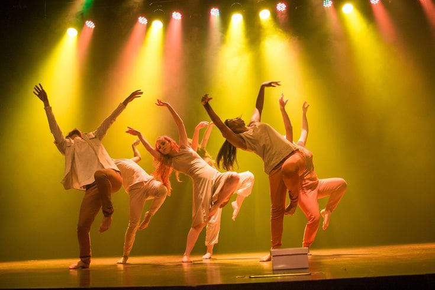
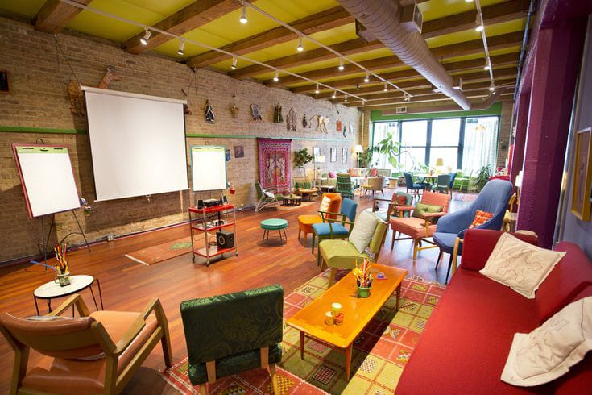
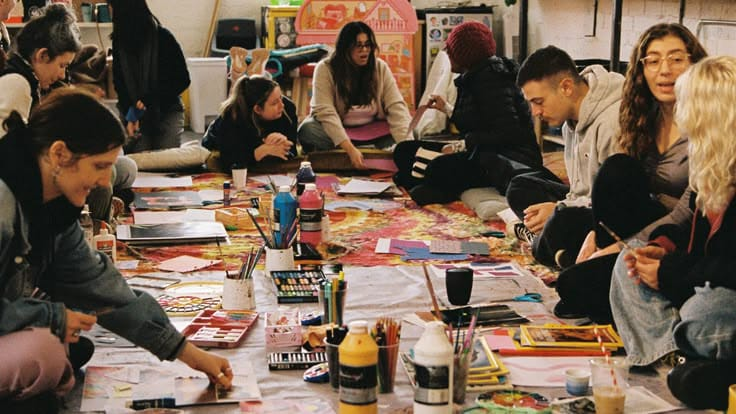

Bienvenidos al Centro Cultural La Estación de Creatividad
Un espacio para encontrarnos, aprender y crear en comunidad, con propuestas culturales abiertas a todas las edades.
Una estación para cada forma de crear
El año cambia.
La creatividad también.
Arte, movimiento, imagen y sonido se encuentran durante todo el año en propuestas para explorar y compartir.
Nuestra comunidad
Historia del Centro Cultural

Un lugar para encontrarnos
La propuesta nació como un proyecto comunitario para recuperar la mística de la antigua estación de trenes y del espacio cultural de Caleta Olivia. Queríamos convertir ese lugar en un refugio donde creadores, vecinos y personas aficionadas pudieran encontrarse con el arte.

Creatividad que nos une
Hoy buscamos mucho más que formar artistas individuales: queremos tejer una red cultural activa en la Patagonia. El intercambio entre disciplinas y generaciones nos permite aprender en comunidad y hacer crecer la creatividad que nos une.